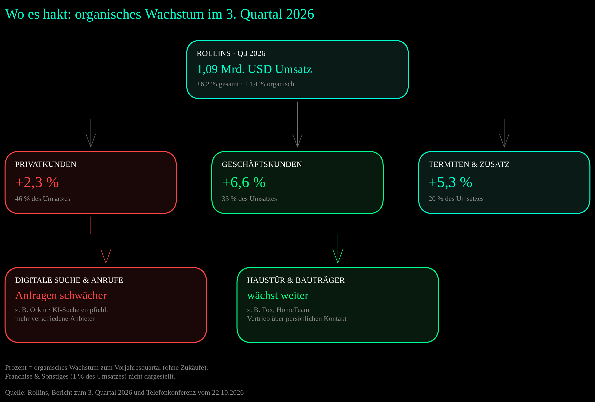
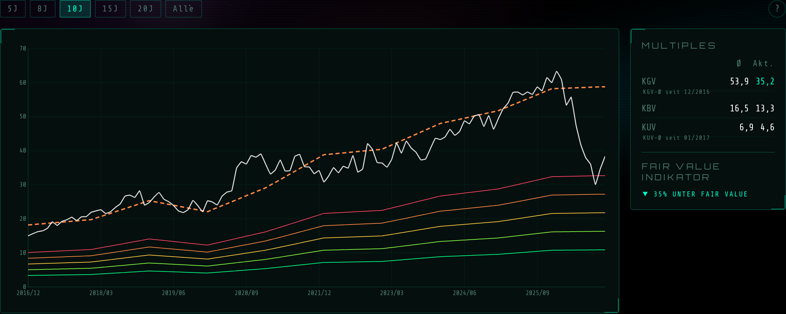
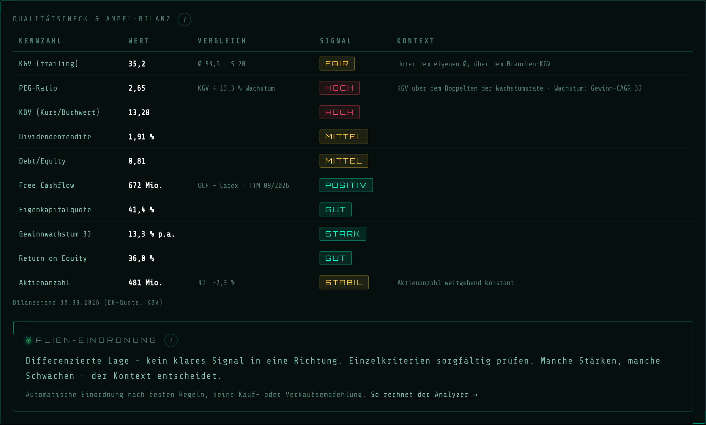
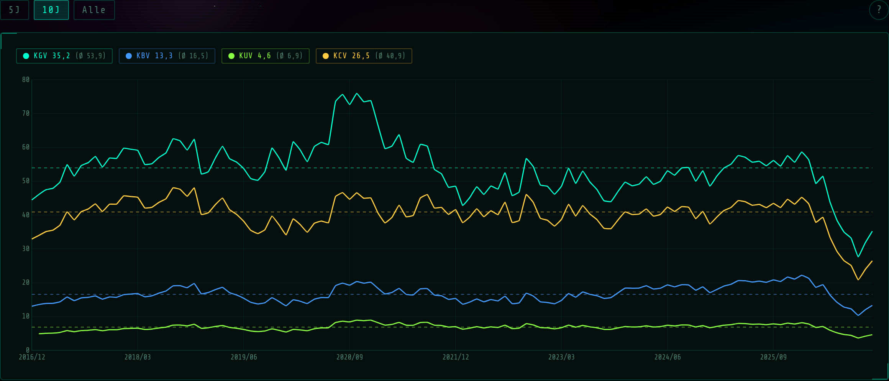
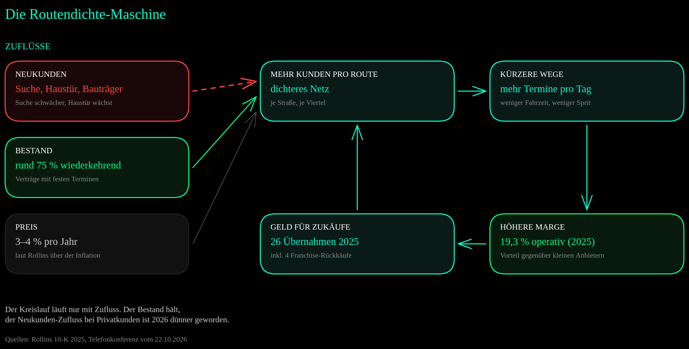
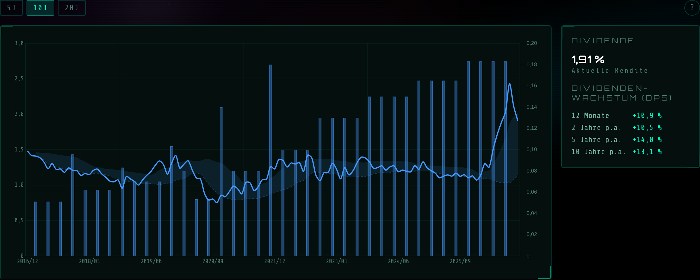

Am 21. Oktober 2026 meldete Rollins das 100. Quartal in Folge mit steigendem Umsatz. Die Nachricht ging fast unter, denn am nächsten Morgen senkte der Konzern hinter Orkin seine Wachstumsprognose zum zweiten Mal innerhalb von drei Monaten. Vom Rekord-Schlusskurs im Februar (65,60 USD) war die Aktie am Tiefpunkt Anfang Oktober fast 55 % entfernt, heute sind es noch 41,5 %. Schädlinge gibt es nicht weniger. Verändert hat sich nach Angaben des Managements etwas anderes: wie Hausbesitzer einen Kammerjäger finden. Diese Analyse ersetzt die Fassung vom November 2025 und klärt, was davon das Geschäft trifft und was nur die Bewertung.
„Schädlinge verschwinden nicht, weil eine KI antwortet. Aber wer in der Antwort nicht auftaucht, bekommt den Anruf nicht.“
1) Kurzüberblick
| Kennzahl | Wert |
|---|---|
| Ticker | ROL (NYSE) |
| Kurs (Schluss 04.11.2026) | 38,38 USD |
| Abstand zum Rekord | −41,5 % (Schlusskurs 65,60 USD am 11.02.2026) |
| Marktkapitalisierung | ~18,3 Mrd. USD |
| KGV (trailing) | 35,2 (Median seit 12/2016: 53,9) |
| EPS (TTM, GAAP verwässert) | 1,09 USD |
| Umsatz (TTM) | 3,99 Mrd. USD |
| Free Cashflow (TTM) | 672 Mio. USD (darin 63 Mio. Steuererstattung) |
| Dividendenrendite | 2,1 % (neue Quartalsdividende 0,20 USD) |
| Anteil der Familie Rollins | 37,9 % (Stand September 2026) |
| Sektor | Industrie / Dienstleistungen (Schädlingsbekämpfung) |
Rollins ist einer der größten Schädlingsbekämpfer der Welt, mit Schwerpunkt Nordamerika. Mehr als 2,8 Millionen Privat- und Geschäftskunden, rund 22.000 Mitarbeiter, über 850 Standorte (einschließlich Franchise). Die bekannteste Marke ist Orkin, dazu kommt eine Reihe weiterer wie HomeTeam Pest Defense, Fox Pest Control, Clark, Western Pest Services und Critter Control. Rund drei Viertel des Umsatzes stammen aus Verträgen mit festen, wiederkehrenden Terminen.
Was 2026 passiert ist
| Datum | Ereignis | Kurs ROL |
|---|---|---|
| 11.02.2026 | Rekord-Schlusskurs, am Abend Zahlen zum Gesamtjahr 2025 | 65,60 USD |
| 12.02.2026 | Tag nach den Zahlen: schwaches Einmalgeschäft, Wetter | −10,5 % |
| 14.05.2026 | Investorentag (Mitteilung): Ziel 7–8 % organisches Wachstum | — |
| 23.07.2026 | Tag nach den Q2-Zahlen: Prognose auf „mindestens 6 %“ gesenkt | −9,3 % auf 39,44 USD |
| 05.10.2026 | Tiefster Schlusskurs | 29,69 USD |
| 22.10.2026 | Tag nach den Q3-Zahlen: Prognose auf 4–6 % gesenkt | +5,6 % auf 35,31 USD |
| 29.10.2026 | Familie Rollins kauft Aktien für rund 50 Mio. USD | Ø 34,59 USD |
| 04.11.2026 | Schlusskurs | 38,38 USD |
Auffällig ist der 22. Oktober. Am Vorabend war die Aktie nachbörslich um 7,5 % gefallen, sie eröffnete bei 31,84 USD und schloss trotzdem 5,6 % im Plus. Vor den Zahlen hatte sie sich gegenüber dem Rekord schon fast halbiert (−49 %). Ein großer Teil der schlechten Nachricht war also im Kurs, bevor sie kam.
Drei Dinge sind 2026 zusammengekommen:
- Weniger Neukunden bei Privatkunden: Das organische Wachstum bei Privatkunden fiel von 4,2 % im ersten auf 2,3 % im dritten Quartal. Das Management nennt die KI-Suche als Hauptgrund: Sprachmodelle wie ChatGPT und Gemini empfehlen eine breitere Auswahl an Anbietern als die klassische Google-Suche, bei Rollins’ Marken kommen weniger Anfragen an.
- Zwei Prognosesenkungen: Im Februar standen für 2026 noch 7–8 % organisches Wachstum im Jahresbericht, im Juli „mindestens 6 %“, im Oktober 4–6 %. Für 2027 nennt Rollins vor den Jahreszahlen im Februar keine Zahl.
- Margen unter Vorjahr: Die operative Marge lag im dritten Quartal bei 20,5 % nach 21,9 %. Mehr als den gesamten Rückgang erklären höhere Kosten für Versicherung und Schadenfälle, gemessen an einem Vorjahresquartal mit besonders niedrigen Schadenkosten.
2) Geschäftsmodell & Segmente
Das Geschäft ist einfach und hat sich in Jahrzehnten kaum verändert. Ein Techniker fährt eine Route ab und besucht Kunden monatlich, alle zwei Monate oder quartalsweise. Er behandelt gegen Insekten, Nagetiere oder Termiten und kontrolliert Köderstationen. Die meisten Kunden zahlen für laufenden Schutz, nicht für einen einzelnen Einsatz. Rollins gibt den Mix zum Jahresende 2025 mit rund 75 % wiederkehrenden Leistungen, 10 % Zusatzleistungen (etwa Abdichtung, Dämmung, Kriechkeller) und 15 % Einmaleinsätzen an.
| Bereich | 2025 (Mio. USD) | Anteil | Q3 2026 (Mio. USD) | Organisch Q3 |
|---|---|---|---|---|
| Privatkunden (Residential) | 1.693,2 | 45 % | 499,7 | +2,3 % |
| Geschäftskunden (Commercial) | 1.244,7 | 33 % | 360,7 | +6,6 % |
| Termiten & Zusatzleistungen | 781,5 | 21 % | 217,9 | +5,3 % |
| Franchise & Sonstiges | 41,5 | 1 % | 11,4 | +11,4 % |
| Gesamt | 3.761,1 | 100 % | 1.089,7 | +4,4 % |
Quellen: Rollins 10-K 2025, Pressemitteilung zum dritten Quartal 2026. „Organisch“ heißt ohne Umsatz aus Zukäufen der letzten zwölf Monate.
Zwei Wachstumsquellen kommen zum Bestand hinzu. Preise: Rollins sieht sich als Geschäft, das jedes Jahr etwas mehr als die Inflation durchsetzt, laut Finanzchef Will Harkins 3–4 % über das ganze Portfolio, bei Geschäftskunden stärker als bei Privatkunden. Zukäufe: 2025 waren es 26 Übernahmen (22 Firmen und 4 Franchise-Rückkäufe), darunter Saela Pest Control für 207,2 Mio. USD. 2023 kam Fox Pest Control für 350 Mio. USD dazu. Zukäufe sollen jedes Jahr 2–3 % zusätzliches Umsatzwachstum bringen.
Für die aktuelle Lage ist wichtig, wie Rollins Neukunden gewinnt. Orkin lebt stark von Kunden, die selbst suchen und anrufen. Fox und HomeTeam verkaufen dagegen viel an der Haustür, HomeTeam zusätzlich über Bauträger, die Schädlingsschutz schon beim Hausbau einbauen. Genau dieser Unterschied zeigt sich 2026 in den Zahlen.
3) Wachstum & Entwicklung
| Jahr | Umsatz | EPS | Op. Marge |
|---|---|---|---|
| 2021 | 2.424 Mio. USD | 0,72 USD | 18,5 % |
| 2022 | 2.696 Mio. USD | 0,75 USD | 18,3 % |
| 2023 | 3.073 Mio. USD | 0,89 USD | 19,0 % |
| 2024 | 3.389 Mio. USD | 0,96 USD | 19,4 % |
| 2025 | 3.761 Mio. USD | 1,09 USD | 19,3 % |
| 1.–3. Quartal 2026 | 3.075 Mio. USD (+8,0 %) | 0,85 USD (Vj. 0,85) | 18,5 % (Vj. 19,9 %) |
Bis 2025 war Rollins eine der gleichmäßigsten Wachstumsgeschichten am US-Markt: Umsatz von 2021 bis 2025 um gut 11 % pro Jahr, Gewinn je Aktie um rund 11 % pro Jahr [eigene Rechnung], die operative Marge stabil zwischen 18,3 und 19,4 %. 2026 bricht dieses Muster. In den ersten neun Monaten wuchs der Umsatz noch um 8,0 %, der Gewinn je Aktie stagnierte bei 0,85 USD (bereinigt: 0,89 nach 0,87 USD).
Der Blick auf die Bereiche zeigt, wo es hakt. Geschäftskunden wuchsen 2026 organisch um 7,7 %, 7,2 % und 6,6 %, also nur leicht langsamer. Termiten und Zusatzleistungen kamen von 9,8 % auf 5,3 %, gebremst vor allem durch fehlendes Personal in einzelnen Märkten. Der Auftragsstau dort lag zum Quartalsende auf dem höchsten Stand des Jahres. Bei Privatkunden ging es von 4,2 % über 3,6 % auf 2,3 %. Das Management unterstellt für die Mitte der neuen Prognose, dass die Zahl der Anfragen unter Vorjahr bleibt, sich aber auf dem Niveau des dritten Quartals stabilisiert.

Wo es hakt: Geschäftskunden und Termiten wachsen weiter, bei Privatkunden schwächelt der Kanal über Suche und Anrufe. Haustür- und Bauträgerkanäle (Fox, HomeTeam) wachsen laut Rollins weiter, Fox zweistellig. ↗ Zum Vergrößern klicken

Alien Analyzer V2, Fairer-Wert-Tab (05.11.2026): Der Kurs (weiß) bewegte sich jahrelang um die Fair-Value-Linie (orange gestrichelt), 2026 ist er weit darunter gefallen. Der Indikator meldet „35 % unter Fair Value“. Warum das kein Kaufsignal ist, steht in Abschnitt 6. ↗ Zum Vergrößern klicken
4) Profitabilität & Bilanz

Alien Analyzer V2, Qualitätscheck (05.11.2026, Bilanzstand 30.09.2026). Das KGV steht auf „FAIR“: deutlich unter dem eigenen Schnitt, aber deutlich über dem Branchen-KGV von 20. Die automatische Einordnung lautet „Differenzierte Lage“. ↗ Zum Vergrößern klicken
Zur Datenbasis: Die Werte im Screenshot passen zum Quartalsbericht zum 30.09.2026, mit Erläuterungen. Das Debt/Equity von 0,81 enthält 398,6 Mio. USD Leasingverbindlichkeiten (vor allem Fahrzeuge und Gebäude). Nur mit den Finanzschulden von 727 Mio. USD sind es 0,52. Im Free Cashflow von 672 Mio. USD steckt eine Steuererstattung von 63 Mio. USD aus dem dritten Quartal, ohne sie bleiben rund 609 Mio. [eigene Rechnung]. Die Eigenkapitalrendite von 36,0 % im Tool beruht auf einer anderen Eigenkapital-Basis. Mit dem Gewinn der letzten zwölf Monate und dem Eigenkapital zum Quartalsende sind es rund 38 % [eigene Rechnung]. Die Aktienzahl sank in drei Jahren je nach Zählweise um 1,2 % (ausstehende Aktien) bis 2,4 % (gewichtete verwässerte Aktien), das Tool zeigt −2,3 %. Die 481 Mio. Aktien im Tool sind ein älterer Stand. Laut Deckblatt des Quartalsberichts waren es am 12.10.2026 478,05 Mio., daher auch die etwas niedrigere Marktkapitalisierung in der Tabelle oben (18,3 statt 18,5 Mrd. USD). Die 1,91 % Dividendenrendite im Tool entsprechen den Zahlungen der letzten zwölf Monate, mit der neuen Quartalsdividende sind es 2,1 %.
Die Margen: Im dritten Quartal fiel die operative Marge um 1,4 Prozentpunkte auf 20,5 %. Versicherung und Schadenfälle kosteten zusammen 1,6 Prozentpunkte, Fuhrpark und Treibstoff 0,6. Bei den Personalkosten sparte Rollins 0,4 Prozentpunkte, weil es nach dem schwachen zweiten Quartal die Besetzung an die geringere Nachfrage angepasst hat. Der Vergleich ist verzerrt: Im dritten Quartal 2025 lagen Versicherung und Schadenfälle bei nur 1,8 % des Umsatzes, in den ersten neun Monaten 2025 bei 2,7 %. Ohne diesen Effekt hätte die zusätzliche Marge auf den neuen Umsatz laut Unternehmen über 25 % gelegen. Gemeldet sind −2,8 % (bereinigtes EBITDA). Das ist eine Bereinigung des Managements, keine geprüfte Zahl.
Cash und Bilanz: Rollins braucht kaum Investitionen. In den ersten neun Monaten standen 532,7 Mio. USD operativer Cashflow nur 19,9 Mio. USD Investitionen gegenüber, es blieben 512,8 Mio. USD Free Cashflow. Ausgegeben wurden 263,1 Mio. für Dividenden, 162,6 Mio. für Zukäufe und 140,0 Mio. für Aktienrückkäufe am Markt (3,49 Mio. Aktien zu durchschnittlich 40,10 USD, davon 120,0 Mio. im dritten Quartal), zusammen mehr als der Free Cashflow. Den Rest deckten kurzfristige Kredite. Die Schulden sind überschaubar: eine Anleihe über 500 Mio. USD (5,25 %, fällig 2035) und 239,6 Mio. USD kurzfristige Kredite, bei 129,1 Mio. USD Cash. Rollins selbst gibt die bereinigte Nettoverschuldung einschließlich Leasing mit dem 1,0-Fachen des bereinigten Ergebnisses vor Zinsen, Steuern, Abschreibungen und Mieten an (Ende 2025: 0,9). Solide, aber keine Panzer-Bilanz, und das muss sie bei diesem Geschäft auch nicht sein.
Zur Dividende: Am 20. Oktober hob Rollins die Quartalsdividende um rund 10 % auf 0,20 USD an (zahlbar am 10.12.2026). Seit Anfang 2022 hat sich die reguläre Dividende damit verdoppelt. Auf den heutigen Kurs sind das 2,1 % Rendite.
5) Strategische Themen
Die KI-Suche: Vorstandschef Jerry Gahlhoff hat die Erklärung im Gespräch mit Analysten am 22.10.2026 ausgebreitet. Anders als die klassische Suche empfehlen Sprachmodelle laut Gahlhoff eine breitere Auswahl an Anbietern, die je nach Plattform, Markt und sogar Tag wechselt. Bei den Marken, die von selbst suchenden Kunden leben, kommen dadurch weniger Anfragen an. Die Antwort von Rollins: Preisspannen offenlegen, damit die Modelle sie finden (nach Gahlhoffs Worten „innerhalb von Wochen“ umgesetzt), mehr lokale Inhalte, gepflegte Einträge und Kundenbewertungen, dazu erste bezahlte Anzeigen auf ChatGPT und Google Gemini. Ausdrücklich nicht geplant: einfach mehr Geld für Werbung.
Einordnung: Ob die KI-Suche der Hauptgrund ist, lässt sich von außen nicht prüfen. Es ist die Erklärung des Managements. Im Juli hatte es noch keine Ursache benennen können. Der größte Konkurrent Rentokil (Terminix) wuchs in Nordamerika im selben Quartal ebenfalls nur schwach, sagt aber, KI-Suche mache bei ihm nur einen sehr kleinen Teil der Anfragen aus.
Der Prognose-Verlauf: Auf dem Investorentag im Mai (Mitteilung vom 14.05.2026) nannte Rollins seine Mittelfristziele: 7–8 % organisches Wachstum, 2–3 % aus Zukäufen, eine Marge von rund 30–35 % auf jeden zusätzlichen Umsatzdollar (bereinigtes EBITDA) und mehr Free Cashflow als Gewinn. Zehn Wochen später kam die erste Senkung für 2026, drei Monate danach die zweite. Für 2026 gilt jetzt: 4–6 % organisch, Zukäufe 2–3 %, zusätzliche Marge „leicht positiv bis 10 %“. Finanzchef Harkins hält am Weg zurück zu 7–8 % fest, will über 2027 aber erst mit den Jahreszahlen im Februar sprechen.
Führung: Seit dem 15.06.2026 ist William Harkins Finanzchef. Er kam im März 2025 als Chief Accounting Officer und folgte auf Kenneth Krause. Gahlhoff selbst ließ an der Lage keinen Zweifel: „Unser drittes Quartal hat unsere Erwartungen nicht erfüllt, und wir sind mit diesen Ergebnissen nicht zufrieden.“
Die Familie Rollins: Eine Gruppe um die Gründerfamilie hielt im September 2026 laut Pflichtmeldung bei der SEC 37,9 % der Aktien. Im November 2025 verkauften zwei Familiengesellschaften (LOR, Inc. und Rollins Holding Company) 20 Mio. Aktien zu 57,50 USD, rund 1,15 Mrd. USD. Rollins kaufte davon 3,48 Mio. Aktien für rund 200 Mio. USD selbst zurück. Am 29.10.2026 kaufte LOR am Markt 1.444.402 Aktien zu durchschnittlich 34,59 USD, rund 50 Mio. USD. LOR und der R. Randall Rollins Voting Trust melden diesen Kauf in zwei Formularen, es ist ein Kauf, nicht zwei. Die Sperrfrist aus dem Verkauf von 2025 läuft um den 10.11.2026 aus.
Wettbewerbsverbote: Die US-Handelsbehörde FTC hat am 22.06.2026 einen Vergleich mit Rollins endgültig bestätigt: Wettbewerbsverbote gegen mehr als 18.000 aktuelle und frühere Beschäftigte darf Rollins nicht mehr durchsetzen. Eine Geldstrafe gab es nicht. Gahlhoff nennt das Thema „praktisch kein Problem“.
Ausblick (Analystenkonsens, stockanalysis.com, Stand 23.10.2026): Umsatz 2026E 4,05 Mrd. USD, 2027E 4,35 Mrd. USD. Gewinn je Aktie 2026E 1,14 USD, 2027E 1,23 USD [SCHÄTZUNG — Analystenprognose, laut Quelle bereinigt]. Das Konsens-Votum lautet „Halten“.
6) Bewertung im Kontext

Alien Analyzer V2, Multiples-Tab (05.11.2026): Zehn Jahre lang lag das KGV meist zwischen 45 und 60, 2020 zeitweise über 70. 2026 fiel es bis unter 30. Alle vier Kennzahlen liegen klar unter ihrem Median. ↗ Zum Vergrößern klicken
* Kurs 38,38 USD geteilt durch den Analystenkonsens für 2027 von 1,23 USD je Aktie (bereinigt) [SCHÄTZUNG, eigene Rechnung].
Hier liegt der Kern der Analyse. Der Analyzer meldet „35 % unter Fair Value“. Die Rechnung dahinter ist einfach: aktueller Gewinn je Aktie (1,09 USD) mal Median-KGV der letzten zehn Jahre (53,9) ergibt rund 58,75 USD. Das ist eine Modellrechnung, kein Kursziel, und sie hat eine entscheidende Annahme: dass der Markt wieder das 54-Fache des Gewinns zahlt.
Dieses Vielfache hat Rollins sich in einer bestimmten Phase verdient: zweistelliges Umsatzwachstum (2021–2025: 10–14 % pro Jahr), organisch zuletzt rund 7 % (2025: 6,9 %) und eine Verlässlichkeit, die an der Börse selten ist. Genau diese Annahme hat 2026 Risse bekommen. Ein Median aus der Vergangenheit sagt nichts darüber, ob die Gründe für die Prämie noch gelten. Den Indikator übernehme ich deshalb nicht als Signal.
Drei Blickwinkel auf denselben Kurs von 38,38 USD [SCHÄTZUNG — eigene Rechnungen, keine Tatsachen]:
- Gegen die eigene Geschichte: KGV 35,2 statt 53,9. Im ganzen Zeitraum seit 2016 war Rollins erst in den letzten Monaten so niedrig bewertet.
- Gegen den Markt: Das Branchen-KGV, mit dem der Analyzer vergleicht, liegt bei 20. Rollins kostet weiterhin gut 75 % mehr. Auch das PEG von 2,65 zeigt: Für das Gewinnwachstum der letzten drei Jahre (13,3 % pro Jahr) ist die Aktie nicht billig.
- Nach vorn: Auf den bereinigten Konsens-Gewinn 2027 von 1,23 USD gerechnet ist es ein KGV von rund 31. Die Free-Cashflow-Rendite liegt bei rund 3,7 %, ohne die Steuererstattung bei 3,3 %.
Meine Einordnung: Der Markt hat einen großen Teil der Qualitätsprämie gestrichen, aber nicht die ganze. Bei 4–6 % organischem Wachstum ist ein KGV von 35 weiterhin eine Wette darauf, dass Rollins zu den alten Wachstumsraten zurückfindet. Gelingt das, ist die Bewertung im historischen Vergleich niedrig. Gelingt es nicht, ist auch ein KGV von 30 kein Schnäppchen.
Tool-Tipp
Die Kennzahlen in dieser Analyse stammen aus dem Alien Analyzer V2 — dem eigenen Screening-Tool für Aktien. Fairer Wert, Multiples, Dividenden und Qualitätscheck auf einen Blick. Kostenlos, kein Login, kein Abo.
Alien Analyzer V2 — Ticker eingeben, analysieren.
7) Wettbewerbsumfeld & Moat
| Unternehmen | Profil | Lage im 3. Quartal 2026 |
|---|---|---|
| Rollins (ROL) | Privat, Gewerbe, Termiten; Schwerpunkt Nordamerika | Umsatz 1,09 Mrd. USD, organisch +4,4 % |
| Rentokil Initial (Terminix) | Weltmarktführer, gut 60 % des Umsatzes in Nordamerika | Umsatz 1,89 Mrd. USD, organisch +3,4 %; Schädlingsbekämpfung Nordamerika +2,4 % |
| Ecolab (ECL) | Hygienekonzern mit Schädlingsbekämpfung für Gastronomie und Lebensmittelindustrie | Schädlingsbekämpfung organisch +8 % (nur Gewerbe) |
| Anticimex | International tätig, Sitz in Schweden | nicht börsennotiert |
| Regionale und lokale Firmen | Zahllose kleine Anbieter, stark zersplitterter Markt | ohne Routendichte, aber in KI-Empfehlungen sichtbar |
Quellen: Rollins 10-K 2025 (Wettbewerber), Rollins, Rentokil und Ecolab zum dritten Quartal 2026. Rentokil rechnet zu konstanten Wechselkursen.

Der Burggraben als Kreislauf: Mehr Kunden pro Route senken die Kosten je Besuch, die höhere Marge finanziert Zukäufe, die das Netz verdichten. Angetrieben wird er von drei Zuflüssen, und genau einer davon ist 2026 dünner geworden. ↗ Zum Vergrößern klicken
Der Burggraben hat zwei Seiten. Die Kostenseite ist die Routendichte. Ein Techniker, der in einer Straße fünf Kunden hat statt einem, fährt weniger und schafft mehr Termine am Tag. Diesen Vorteil kann ein lokaler Ein-Mann-Betrieb nicht kopieren, und Rollins vergrößert ihn mit jedem Zukauf. An dieser Seite hat sich 2026 nichts geändert.
Die Nachfrageseite ist die Marke. Wer jahrzehntelang „Orkin“ auf Lieferwagen und in Suchergebnissen sah, rief Orkin an. Genau dort setzt die KI-Suche an. Wenn ein Sprachmodell auf die Frage nach einem Kammerjäger fünf lokale Firmen nennt, zählt die bekannte Marke weniger, und Bewertungen, Preise und Erreichbarkeit zählen mehr. Meine Einordnung: Der Kostengraben steht, der Markengraben wird gerade flacher. Wie stark, entscheidet sich daran, ob Rollins in den neuen Kanälen genauso sichtbar wird wie früher bei Google. Die Haustürmarken zeigen, dass Rollins Kunden auch ohne Suchmaschine gewinnen kann.
8) Kundenperspektive
Schädlingsbekämpfung ist kein Produkt, auf das man verzichtet, wenn Termiten im Gebälk sitzen oder Ratten in der Restaurantküche. Das trägt die wiederkehrenden Verträge und die jährlichen Preiserhöhungen. Auch im Oktober nannte das Management die Kundenbindung „stark“, die Zahl der Privatkunden mit Vertrag wuchs weiter. Das Problem liegt bei der Neukundengewinnung, nicht bei Kündigungen.
Neu ist, dass Kundenbewertungen direkt über das Neugeschäft mitentscheiden: Sprachmodelle stützen ihre Empfehlungen auch auf Bewertungen und Einträge. Rollins hat das selbst als Ansatzpunkt genannt. Systematische, vergleichbare Zufriedenheitsdaten für die vielen Marken liegen für diese Analyse nicht vor. [NICHT VERFÜGBAR]
9) Mitarbeiterperspektive
Rollins beschäftigte Ende 2025 21.946 Menschen, die meisten davon als Techniker im Außendienst. Das Geschäft hängt an ihnen: Bei Termiten und Zusatzleistungen bremste 2026 fehlendes Personal in einzelnen Märkten das Wachstum, während der Auftragsstau stieg. Nach dem schwachen zweiten Quartal passte Rollins die Besetzung an die geringere Nachfrage an. Seit der FTC-Anordnung vom Juni darf Rollins Wettbewerbsverbote gegen mehr als 18.000 aktuelle und frühere Beschäftigte nicht mehr durchsetzen. Systematische Arbeitgeber-Bewertungen sind für diese Analyse nicht auswertbar. [NICHT VERFÜGBAR]
10) Chancen & Risiken
11) Alien-Fazit

Alien Analyzer V2, Dividenden-Tab (05.11.2026): Die Dividende je Aktie wuchs über zehn Jahre um 13,1 % pro Jahr. Die Rendite (blaue Linie) ist mit dem Kursrückgang auf den höchsten Stand des Zeitraums gestiegen. Die Erhöhung auf 0,20 USD ist im Chart noch nicht enthalten. ↗ Zum Vergrößern klicken
Operativ ist Rollins kein Sanierungsfall. Der Umsatz wächst im 100. Quartal in Folge, Geschäftskunden und Termiten legen weiter zu, der Free Cashflow liegt über dem Gewinn, die Dividende steigt um 10 %. Die Familie, die vor einem Jahr für 1,15 Mrd. USD zu 57,50 USD verkauft hat, kauft jetzt für rund 50 Mio. USD zu 34,59 USD nach.
Ernst ist die Lage trotzdem, und zwar an einer bestimmten Stelle: bei Privatkunden, fast der Hälfte des Umsatzes, wächst das Geschäft organisch nur noch um 2,3 %. Das Management hat sich in diesem Jahr zweimal verschätzt und gibt für 2027 noch keine Zahl. Ob die KI-Suche eine Umstellung ist, die Rollins mit Preistransparenz, Bewertungen und neuen Anzeigenkanälen in ein bis zwei Jahren verarbeitet, oder ob sie den Markenvorteil von Orkin dauerhaft schmälert, kann heute niemand sagen. Rollins auch nicht.
Der Kurs hat viel davon verarbeitet. Gemessen an der eigenen Geschichte ist die Aktie so günstig wie lange nicht, gemessen am heutigen Wachstum aber nicht billig. Den „35 % unter Fair Value“ des Analyzers liegt eine Prämie zugrunde, die Rollins sich erst wieder verdienen muss. Die nächsten Prüfsteine sind konkret: die Zahl der Anfragen im vierten Quartal, die Prognose für 2027 im Februar, die Margen, sobald der Vorjahreseffekt bei den Schadenfällen ausläuft, und ob die Familie nach dem Ende der Sperrfrist um den 10. November weiter kauft oder wieder verkauft.
„Ein Burggraben aus Lieferwagen und Routen lässt sich nicht googeln. Ein Burggraben aus Bekanntheit schon, und genau der wird gerade neu vermessen.“
Datenstand und Quellen: Kurse bis Schluss 04.11.2026 (NYSE). Analyzer-Screenshots vom 05.11.2026 (Yahoo-Finance-Basis, Jahresgewinne aus SEC-Berichten). Quartalszahlen aus den Rollins-Pressemitteilungen zum ersten bis dritten Quartal 2026, dem Quartalsbericht 10-Q zum 30.09.2026, dem Jahresbericht 10-K 2025 und der Telefonkonferenz vom 22.10.2026. Beteiligung, Verkauf und Kauf der Familie laut Schedule 13D/A (21.09.2026) und Form 4 (12.11.2025 und 02.11.2026), FTC-Anordnung laut FTC-Mitteilung vom 22.06.2026, Rentokil laut Trading Update vom 22.10.2026. Konsens: stockanalysis.com, 23.10.2026. Mit [SCHÄTZUNG] oder [eigene Rechnung] markierte Werte sind eigene Rechnungen oder fremde Prognosen, keine Tatsachen.